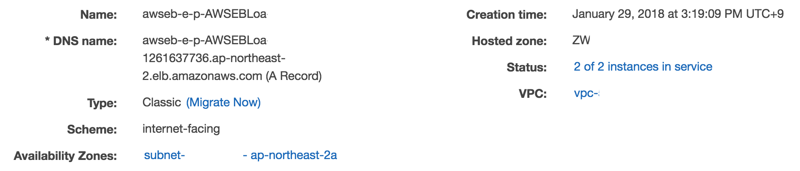
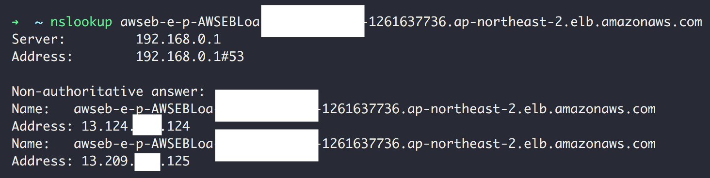

상황
결제 서비스는 아래와 같은 접근 경로를 허용해야한다.
- 사내
- 결제 서비스 개발자의 작업 공간
- A라는 웹 서비스
따라서 아래와 같은 Security Group을 가져야한다.
| Type | Protocol | Port Range | Source | Description |
|---|---|---|---|---|
| HTTPS | TCP | 443 | 12.34.44.12/32 | Developer Home |
| HTTPS | TCP | 443 | 13.44.12.55/32 | Developer Cafe |
| HTTPS | TCP | 443 | 22.33.44.11/32 | Office |
| HTTPS | TCP | 443 | 77.33.44.22/32 | A Web Service |
또한 인증 서비스는 아래와 같은 접근 경로를 허용해야한다.
- 사내
- 개발자의 작업 공간
- B라는 웹 서비스
따라서 아래와 같은 Security Group을 가져야한다.
| Type | Protocol | Port Range | Source | Description |
|---|---|---|---|---|
| HTTPS | TCP | 443 | 12.34.44.12/32 | Developer Home |
| HTTPS | TCP | 443 | 13.44.12.55/32 | Developer Cafe |
| HTTPS | TCP | 443 | 22.33.44.11/32 | Office |
| HTTPS | TCP | 443 | 41.22.44.22/32 | B Web Service |
결제 서비스의 Security Group과 인증 서비스의 Security Group은 어떤 웹 서비스에서 접근해야하느냐만 다르고, 나머진 동일하다.
위와 같은 문제는 개발자나 사내의 IP(즉 공통된 부분)이 변경됐을 때 각 시큐리티 그룹을 일일이 찾아서 수정해줘야한다는 문제점이 존재한다.
따라서 먼저 공통 부분을 Security Group으로 뺏다. (id는 sg-workaround라고 가정)
이렇게 하면 공통된 부분이 변경됐을 때 일일이 찾아다녀도 되지 않는다는 장점이 존재한다.
| Type | Protocol | Port Range | Source | Description |
|---|---|---|---|---|
| HTTPS | TCP | 443 | 12.34.44.12/32 | Developer Home |
| HTTPS | TCP | 443 | 13.44.12.55/32 | Developer Cafe |
| HTTPS | TCP | 443 | 22.33.44.11/32 | Office |
그리고 다시 결제 서비스 Security Group을 만들었다.
| Type | Protocol | Port Range | Source | Description |
|---|---|---|---|---|
| HTTPS | TCP | 443 | sg-workaround | Developer + Office |
| HTTPS | TCP | 443 | 77.33.44.22/32 | A Web Service |
그리고 다시 인증 서비스 Security Group을 만들었다.
| Type | Protocol | Port Range | Source | Description |
|---|---|---|---|---|
| HTTPS | TCP | 443 | sg-workaround | Developer + Office |
| HTTPS | TCP | 443 | 41.22.44.22/32 | B Web Service |
Security Group을 리팩토링(?)해서 공통된 부분을 추출해서 장애의 가능성을 좀 더 줄였다.
하지만 위와 같이 작동을 할까?
답은 아니다.
문제 해결
Security Group의 Source 부분에 다른 Security Group을 추가하는 것은 중첩이나 상속 등등을 의미하지 않는다.
Security Group에서 다른 Security Group을 참조하는 경우가 어떨 때 쓰는 건지는 좀 이따 설명하겠다.
우리는 우선 위 문제부터 해결해보자.
우선 공통된 부분을 따로 빼야한다는 사실은 변하지 않는다. (id는 sg-workaround라고 가정)
이렇게 하면 공통된 부분이 변경됐을 때 일일이 찾아다녀도 되지 않는다는 장점이 존재한다.
| Type | Protocol | Port Range | Source | Description |
|---|---|---|---|---|
| HTTPS | TCP | 443 | 12.34.44.12/32 | Developer Home |
| HTTPS | TCP | 443 | 13.44.12.55/32 | Developer Cafe |
| HTTPS | TCP | 443 | 22.33.44.11/32 | Office |
그리고 결제 서비스에서만 차이점을 가지는 서버들을 시큐리티 그룹에 추가해주자. (id는 sg-payment라고 가정)
| Type | Protocol | Port Range | Source | Description |
|---|---|---|---|---|
| HTTPS | TCP | 443 | 77.33.44.22/32 | A Web Service |
그리고 인증 서비스에서만 차이점을 가지는 서버들을 시큐리티 그룹에 추가해주자. (id는 sg-auth라고 가정)
| Type | Protocol | Port Range | Source | Description |
|---|---|---|---|---|
| HTTPS | TCP | 443 | 41.22.44.22/32 | B Web Service |
그리고 결제 서비스의 Security Group에는 sg-workaround, sg-payment 두 개를 적용하고,
인증 서비스의 Security Group에는 sg-workaround, sg-auth 두 개를 적용해주면 된다.
이거보다 더 나은 방법이 있으면 댓글 남겨주시면 감사하겠습니다 :)
Security Group에서 다른 Security Group을 참조하는 경우
시큐리티 그룹을 source에 왜 할당할 수 있는 걸까??
Elastic Load Balancer(AWS에서 제공하는 Load Balancer라고 보면 됨, 이하 ELB) - EC2(AWS에서 제공하는 웹 서버라고 보면 됨) 구조를 이해하면 편하다.
여기서 가정할 것은 ELB는 public subnet에 있어서 외부에서 바로 접근이 가능해야하고,
EC2 인스턴스는 private subnet에 있어서 외부에서 접근이 불가능 하고, 오직 ELB를 통해서만 접근이 가능하다는 점이다.
우선 ELB의 Security Group부터 구성해보자. (id는 sg-elb라고 가정.)
| Type | Protocol | Port Range | Source | Description |
|---|---|---|---|---|
| HTTPS | TCP | 443 | 0.0.0.0/0 | public access |
EC2 인스턴스로는 다이렉트로 요청이 오는 게 아니라 무조건 ELB를 통해서 온다.
ELB와 EC2 사이의 통신은 private network를 통해 이뤄지므로 외부로 패킷이 새어나갈 일이 거의 없다고 보면 된다.
따라서 EC2 인스턴스와 ELB 사이의 통신은 HTTPS일 필요가 없으므로 EC2에는 TLS(SSL) 인증서를 붙일 필요도 없고, ELB의 http 포트(80번)만 열어주면 되고,
ELB의 IP를 EC2 인스턴스의 시큐리티 그룹으로 추가해주면 된다.


AWS에서는 ELB가 죽으면 서비스가 죽는 걸(SPOF, Single Point of Failure) 방지하고자 ELB까지 이중화했다.
AWS의 이런 세심한 배려 덕분에 우리는 EC2의 Security Group을 다음과 같이 구성하면 된다.
Network Load Balancer의 경우에는 Elastic IP(AWS에서 제공하는 고정 IP, 이하 EIP)를 설정하고 그것만 등록하면 된다.
| Type | Protocol | Port Range | Source | Description |
|---|---|---|---|---|
| HTTP | TCP | 80 | 13.124.xxx.124/32 | ELB 1 |
| HTTP | TCP | 80 | 13.209.xxx.125/32 | ELB 2 |
하지만 위와 같이 설정해도 다음과 같은 문제가 존재한다.
시간이 지나면 ELB의 ip는 변한다.
또한 우리는 Public DNS를 가지고 nslookup 명령어를 때려서 ip 주소를 가져왔다.Public DNS를 가지고 온 ip는 Public ip이다. (13.124.xxx.124, 13.209.xxx.125)
ELB와 EC2 사이의 통신은 private network를 통해 이뤄지므로 ELB의 private ip가 Security Group에 추가돼야한다.
하지만 우리는 ELB의 private ip를 알 방법이 없다.
방법이 없는 것은 아니다.
private ip는 서브넷의 cidr block 안에서 생성된다.
따라서 elb가 존재하는 public subnet의 cidr block을 설정하면 된다. (여기서는 cidr block을 가정하겠다.)
| Type | Protocol | Port Range | Source | Description |
|---|---|---|---|---|
| HTTP | TCP | 80 | 10.0.1.0/24 | Public Subnet |
위와 같이 설정하면 ELB를 통해서 접속은 된다.
하지만 한 가지 문제점이 존재한다.
해당 서브넷의 모든 리소스가 EC2 인스턴스에 접근이 가능하다는 문제점이 존재한다.
private ip는 고정할 수 없고, ELB의 private ip는 알 방법이 없는데 어떻게 해당 ELB만 EC2에 접근할 수 있게 설정할 수 있을까?
해답은 바로 EC2의 Security Group에 ELB의 Security Group을 추가하는 것이다.
| Type | Protocol | Port Range | Source | Description |
|---|---|---|---|---|
| HTTP | TCP | 80 | sg-elb | ELB |
위와 같이 설정하면 sg-elb를 사용하는 리소스를 통과한 호스트들만 EC2로 다시 통과할 수 있게 되는 구조다.